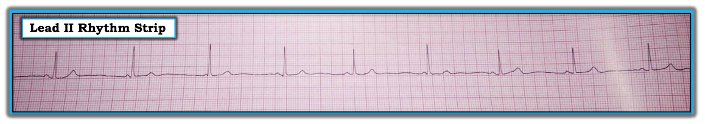
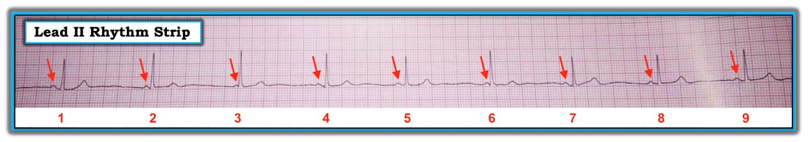
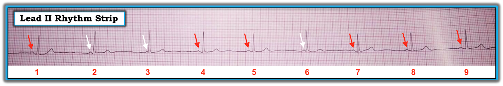
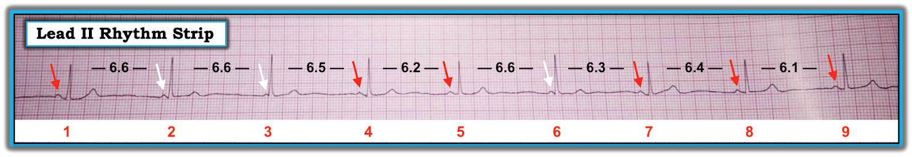

ECG Blog #159 — Sóng P và phức bộ QRS không liên quan nhau?
Dải nhịp chuyển đạo II ở Hình-1 được ghi từ một phụ nữ trung niên đến phòng khám ngoại trú vì đau ngực không do tim.
- Bạn thấy gì?
- Bệnh nhân này có vấn đề về tim không?


=========================
LƯU Ý: Dải nhịp được ghi ở tốc độ chuẩn 25mm/giây. Bản ghi bị méo nhẹ (nghiêng). Điều này thật đáng tiếc — vì nó khiến việc đánh giá chênh lệch về độ dài các khoảng trở nên khó hơn nhiều, mà hóa ra điều này lại rất quan trọng trong ca này. Dù vậy, “tin tốt” là bất chấp hạn chế kỹ thuật này — chúng ta vẫn có thể xác định được điều gì đang diễn ra trên bản ghi này.
- Dưới đây chúng tôi trình bày quy trình phân tích từng bước của mình.
=========================
DIỄN GIẢI: Phức bộ QRS hẹp trên chuyển đạo theo dõi duy nhất này — nên nhịp có vẻ là nhịp trên thất. Thoạt nhìn — nhịp ở Hình-1 trông khá đều. Sóng P có hiện diện — nhưng có vẻ khoảng PR không giữ hằng định trong suốt bản ghi.
- ĐIỂM THEN CHỐT (PEARL) #1: Khi đối mặt với một dải nhịp khó — 2 biện pháp đơn giản giúp ích rất nhiều cho cả việc đọc lẫn việc giải thích cách tiếp cận của bạn cho người khác: i) Đánh số các nhát trên bản ghi; và, ii) Đánh dấu hoạt động nhĩ bằng mũi tên. Đánh số các nhát giúp tiết kiệm thời gian và công sức — vì nếu không làm vậy, người ta không bao giờ chắc chắn đang nói tới nhát nào. Đánh dấu sóng P cho phép bạn xác định LIỆU có một nhịp xoang nền hay không (mũi tên ĐỎ ở Hình-2). Tôi luôn ngạc nhiên khi thấy việc chỉ đơn giản đánh dấu các sóng P xoang lại thường xuyên (và nhanh chóng) làm lộ rõ các mối liên hệ nền đến vậy.
- LƯU Ý: Xin đừng đánh dấu mũi tên hay ghi chú lên dải nhịp gốc. Dải nhịp là một hồ sơ y khoa chính thức — và nếu giả thuyết ban đầu của bạn hóa ra sai — thì bạn không thể xoá được vết mực … Vì vậy tốt nhất là tạo một BẢN SAO của bản ghi — rồi thoải mái viết lên bản sao đó tùy ý.


CÂU HỎI: Hãy nhìn kỹ Hình-2. Có thể thấy rõ một nhịp nhĩ khá đều (nhưng không hoàn toàn đều) (mũi tên ĐỎ).
- Bạn sẽ mô tả mối liên hệ giữa sóng P và phức bộ QRS ở Hình-2 như thế nào?
TRẢ LỜI: Như đã nói ở trên — có vẻ có một nhịp trên thất (tức là QRS hẹp) khá đều ở Hình-2:
- ĐIỂM THEN CHỐT (PEARL) #2: Khi xử lý một nhịp phức tạp — Hãy bắt đầu từ những gì bạn BIẾT CHẮC! Chúng ta biết khoảng PR trước nhát #3 quá ngắn để có thể dẫn truyền. Khoảng PR trước các nhát #2 và #6 cũng có vẻ quá ngắn để dẫn truyền.
- Tiếp theo — Hãy tự hỏi LIỆU có một nhịp xoang nền hay không? Lưu ý rằng khoảng PR trước tất cả các nhát còn lại trên bản ghi này (tức là khoảng PR trước các nhát #1; 4,5; 7,8,9) dài hơn khoảng PR trước các nhát #2,3,6 (Hình-3). Như đã đề cập trước đó — sóng P trên bản ghi này hơi không đều. Nhưng vì khoảng PR bằng nhau và bình thường (~0.14 giây) trước các nhát #1; 4,5; và 7,8,9 — và vì các sóng P đều dương trên dải theo dõi chuyển đạo II này — nhịp nền là loạn nhịp xoang . Vì tần số tim chung dưới 60/phút — nên còn có nhịp chậm.
- Vì 3 nhát có khoảng PR đi trước quá ngắn để dẫn truyền đều có QRS hẹp và có hình thái tương tự 6 nhát dẫn truyền từ xoang trên bản ghi này — nên 3 nhát này (tức là các nhát #2,3,6) hẳn phải là nhát thoát bộ nối .


CÂU HỎI: Hãy nhìn Hình-3.
- Có phân ly nhĩ thất (AV dissociation) không?
- Nếu có — Có blốc AV không?
TRẢ LỜI: Theo định nghĩa — có phân ly nhĩ thất thoáng qua ở Hình-3. Đó là vì, ít nhất trong một khoảng thời gian ngắn — có một số sóng P không liên quan tới các phức bộ QRS lân cận!
- ĐIỂM THEN CHỐT (PEARL) #3: Chỉ vì có phân ly nhĩ thất thoáng qua không nhất thiết có nghĩa là có blốc AV! Điều quan trọng là phải nhận ra rằng có 3 Nguyên nhân tiềm năng của Phân ly Nhĩ thất: i) Phân ly nhĩ thất do một dạng nào đó của blốc độ 2 hoặc độ 3 trong blốc AV; ii) Phân ly nhĩ thất do “Chiếm quyền” (usurpation) — trong đó sóng P tạm thời không được dẫn truyền vì một nhịp bộ nối gia tốc chiếm lấy chức năng tạo nhịp (vì nó nhanh hơn nhịp xoang nền); và/hoặc, iii) Phân ly nhĩ thất do “Mặc định” (default) — trong đó một nhịp thoát bộ nối tiếp quản theo kiểu “mặc định” (tức là do nút SA chậm lại).
- ĐIỂM THEN CHỐT (PEARL) #4: Thuật ngữ “Phân ly nhĩ thất” — không bao giờ nên được dùng như một “chẩn đoán” tự thân. Thay vào đó — chẩn đoán nhịp tối ưu cần chỉ ra rằng có phân ly nhĩ thất là do một hoặc hai nguyên nhân nào trong 3 nguyên nhân tiềm năng của hiện tượng này đang tác động (cùng tác động). Ví dụ, có thể có “phân ly nhĩ thất do chiếm quyền” trong ngộ độc digitalis — vì liều Digoxin quá cao thường gây ra một nhịp bộ nối gia tốc , rồi nhịp này “chiếm quyền” kiểm soát của nhịp xoang nền (đang đập ở tần số chậm hơn).
- ĐIỂM THEN CHỐT (PEARL) #5: Không có bằng chứng blốc AV ở Hình-3. Để có blốc AV độ 2 hoặc độ 3 — ít nhất một số xung động nhĩ phải không dẫn truyền được xuống thất mặc dù có cơ hội đầy đủ để dẫn truyền. Điều này không hề xảy ra ở Hình-3. Đó là vì các sóng P trước các nhát #2, 3 và 6 không bao giờ có cơ hội dẫn truyền, do khoảng PR trước các nhát này rõ ràng quá ngắn để cho phép dẫn truyền. Cách duy nhất để xác định liệu bệnh nhân này có thể có một dạng blốc AV nào đó hay không — là xem một khoảng thời gian theo dõi dài hơn nhiều. Cần thấy sóng P xuất hiện ở mọi thời điểm trong chu kỳ với tần số đủ chậm (thường dưới 50-60/phút) — trước khi có thể đánh giá liệu một số sóng P này có không được dẫn truyền mặc dù có cơ hội đầy đủ để dẫn truyền hay không.
CÂU HỎI: Hãy nhìn lại Hình-3.
- Tại sao có phân ly nhĩ thất?
- Ý nghĩa lâm sàng của dấu hiệu này là gì?
- Và — Nhịp ở Hình-3 là nhịp gì?
TRẢ LỜI: Để trả lời những câu hỏi cuối cùng này — chúng tôi đo tất cả các khoảng R-R trên bản ghi (Hình-4).
- ĐIỂM THEN CHỐT (PEARL) #6: Bạn không thể đọc chính xác các rối loạn nhịp phức tạp trừ khi bạn thường xuyên dùng Compa đo (calipers). NẾU bạn chưa đưa việc dùng compa đo thường xuyên vào thực hành của mình — Bạn sẽ ngạc nhiên khi thấy việc làm đó ngay lập tức khiến bạn không chỉ “giỏi hơn” — mà còn nhanh hơn nhiều khi đánh giá các rối loạn nhịp phức tạp.


ĐIỂM THEN CHỐT (PEARL) #7: Khi đối mặt với một dải nhịp có phân ly nhĩ thất thoáng qua, và bạn không chắc nhát nào có thể đang được dẫn truyền — Hãy tìm sự rút ngắn bất ngờ của khoảng R-R. Sự rút ngắn như vậy thường cho biết nhát nào đang được dẫn truyền.
- Phần lớn thời gian, sự rút ngắn như vậy sẽ rất rõ. Tuy nhiên, nó hoàn toàn không rõ ở Hình-4. Dù vậy, từ các số đo có thể thấy rằng tất cả các nhát dẫn truyền từ xoang ở Hình-4 (tức là tất cả các nhát có sóng P đánh dấu mũi tên ĐỎ đi trước) đều có khoảng R-R đi trước ngắn hơn (tức là từ 6.1 đến 6.5 ô lớn) so với khoảng R-R đi trước 3 nhát thoát bộ nối.
- Khoảng R-R đi trước cả 3 nhát thoát bộ nối trên bản ghi này = 6.6 ô lớn, tương ứng với tần số thoát bộ nối khoảng 45/phút (tức là 300 ÷ 6.6). Tần số này nằm đúng trong khoảng bình thường 40-60/phút của nhịp bộ nối.
- Khoảng R-R đi trước các nhát dẫn truyền từ xoang ở Hình-4 nằm trong khoảng 6.1 đến 6.5 ô lớn. Điều này tương ứng với nhịp chậm xoang và loạn nhịp xoang với tần số trong khoảng 46-49/phút.
Đ
IỂM THEN CHỐT (PEARL) #8: Các số đo trên cho chúng ta biết rằng điều đang thấy ở Hình 4 là Phân ly Nhĩ thất do “Mặc định” (tức là mỗi khi ổ tạo nhịp xoang chậm lại xuống tần số dưới 46/phút — nhịp thoát bộ nối sẽ tiếp quản với tần số thoát bộ nối phù hợp = 45/phút).
- LƯU Ý: Nhịp ở Hình-4 không phải là “phân ly nhĩ thất”. Thay vào đó, nhịp là nhịp chậm xoang và loạn nhịp xoang. Chính vì có nhịp chậm xoang này mà phân ly nhĩ thất xảy ra. Và, vì chúng ta không hề thấy sóng P nào không dẫn truyền mặc dù có cơ hội dẫn truyền — nên không có bằng chứng nào trên bản ghi này về bất kỳ dạng blốc AV nào ...
Đ
IỂM THEN CHỐT (PEARL) #9: Ý nghĩa lâm sàng của nhịp ở Hình-4 tùy thuộc vào lý do gây nhịp chậm xoang. Nguyên nhân có thể là do thầy thuốc (iatrogenic) — ví dụ nếu bệnh nhân đang dùng một thuốc như thuốc chẹn ß có thể làm chậm quá mức tần số xoang. Nếu đúng như vậy — tất cả những gì cần làm có thể chỉ là ngừng thuốc (hoặc giảm liều). Nếu nhờ đó tần số xoang nền nhanh hơn một chút — có thể sẽ không còn cần nhịp thoát bộ nối tiếp quản chức năng tạo nhịp nữa.
- Một nguyên nhân có thể lành tính khác cho nhịp ở Hình-4 là bệnh nhân là một vận động viên sức bền hoàn toàn khỏe mạnh, với nhịp chậm xoang và loạn nhịp xoang “bình thường đối với cô ấy” . Một nhịp bộ nối từng lúc trong hoàn cảnh như vậy có thể là đáp ứng bình thường ở một bệnh nhân không có bệnh lý gì.
- Mặt khác — lý do gây nhịp chậm xoang và loạn nhịp xoang có thể là SSS ( = hội chứng suy nút xoang — Sick Sinus Syndrome) — và, có lẽ với một khoảng thời gian theo dõi dài hơn, có thể thấy bằng chứng của blốc AV (hoặc tần số xoang chậm lại sâu hơn) ...
ĐIỀU CỐT LÕI: Đối chiếu lâm sàng và một khoảng thời gian theo dõi dài hơn là thiết yếu để xác định LIỆU nhịp ở Hình-4 có bệnh lý hay không. Nhịp này có thể là một đáp ứng sinh lý, bình thường ở người phụ nữ trung niên bị đau ngực không do tim này. Có thể không cần can thiệp nào khác cho một nhịp như vậy. Mặt khác — đánh giá thêm có thể cho thấy nhịp này là bệnh lý và bắt buộc phải đặt máy tạo nhịp.
- Kết luận đọc tối ưu cho nhịp ở Hình-4 nên là: “Nhịp chậm xoang và loạn nhịp xoang, gây ra phân ly nhĩ thất do mặc định — nhưng không có bằng chứng blốc AV trên bản ghi này”. Xử trí tối ưu để xác định cần làm gì (nếu có) — sẽ tùy thuộc vào đối chiếu lâm sàng.
-------------------------------------------------------------------------
LỜI CẢM ƠN: Tôi xin cảm ơn BS. Wai Shein ở Kyaukpadaung, Myanmar, đã cho phép tôi sử dụng bản ghi và ca lâm sàng này.
-------------------------------------------------------------------------

LƯU Ý: Để tìm hiểu thêm về những kiến thức cơ bản về blốc AV — Vui lòng BẤM VÀO ĐÂY. Phần bàn luận của tôi về phân ly nhĩ thất bắt đầu ở 49:25 trong video điện tâm đồ dài một giờ này.
- Về tài liệu dạng bài viết về sự khác biệt giữa phân ly nhĩ thất và blốc AV — Xem thêm ECG Blog #21 và/hoặc Phần 20 trong ACLS-2013-ePUb của chúng tôi.